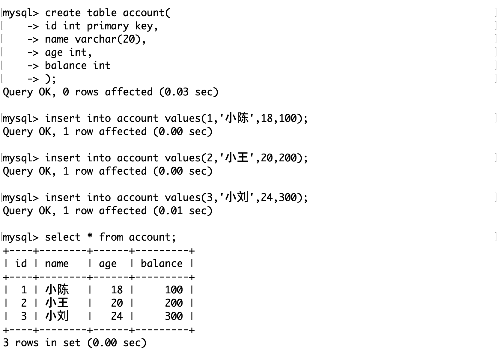
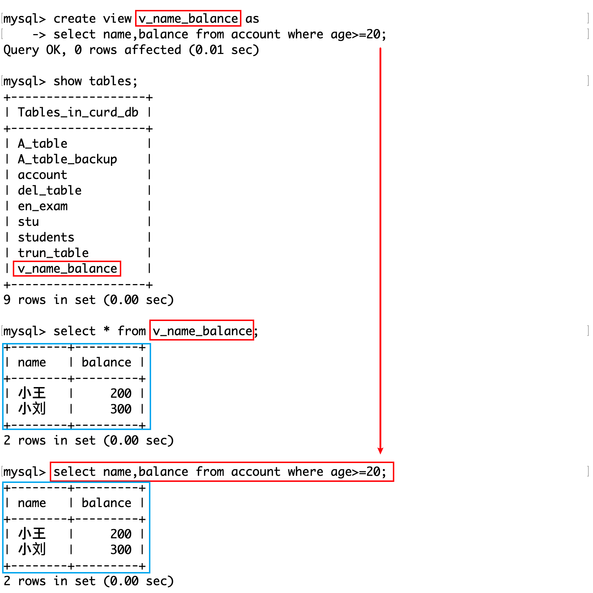

视图
概念
MySQL 中的视图（View）是一个虚拟表，其内容由查询定义。视图本身不包含数据，这些数据是从一个或多个实际表中派生出来的，通过执行视图定义中的 SQL 查询来动态呈现。使用视图可以有以下几个优点：
- 简化复杂的查询：通过将复杂的查询封装在视图中，用户可以通过简单地查询视图来获取需要的信息，无需编写复杂的 SQL 语句。
- 增强数据安全性：可以通过视图向用户展示所需的数据，同时隐藏表中的敏感或不相关的数据，从而限制对实际数据表的直接访问。
- 逻辑数据独立性：如果底层数据表的结构发生了变化（如添加或删除列），可以通过修改视图而不是修改依赖于这些表的应用程序代码来适应这些变化，这有助于减少维护成本。
操作视图
创建视图的基本语法如下：
CREATE VIEW view_name AS
SELECT column1, column2, ...
FROM table_name
WHERE condition;测试表：
创建视图
创建视图首先会执行 SELECT 语句，用查询返回的结果作为视图的内容。
用 SELECT 的返回值作为视图的数据，通过show tables可以查看视图是否被创建。
查询视图
一旦创建，就可以像查询普通表一样查询视图：
SELECT * FROM view_name;更新视图
视图可以被更新（取决于视图的定义和所涉及的表）。如果视图定义允许，可以通过INSERT、UPDATE、DELETE操作来更改视图，这些更改会反映到底层的表中。但是，并非所有视图都是可更新的。
修改视图后，原表中的记录也会随之被修改。反之也是如此。
这是因为视图的内容是随着原表内容动态更新的。
在/var/lib/mysql/数据库名路径下，视图只有一个.frm文件，它值包含表结构的定义，而数据保存在.ibd文件中。这说明视图和原表共用同一份数据文件。这保证了数据一致性，视图往往用于显示和操作热数据。
删除视图
删除视图的语法如下：
DROP VIEW view_name;视图规则和限制
虽然视图在很多方面表现得像真实的表，但存在一些规则和限制：
-
更新规则：
- 只有视图基于单一表时，才可能支持更新操作（INSERT、UPDATE、DELETE）。如果视图包含联合查询、分组操作或子查询，则可能不允许更新。
- 对视图进行的更新操作必须不违反基表的任何约束。
-
算法限制：
- 视图的处理可以使用 MERGE 或 TEMPTABLE 算法。MERGE 将视图查询与主查询合并，但如果视图包含某些类型的 SQL 结构（如 DISTINCT、GROUP BY、聚合函数、UNION 等），则不能使用 MERGE 算法，只能使用 TEMPTABLE 算法，后者将视图的结果放入临时表中。
-
WITH CHECK OPTION：
- 使用 WITH CHECK OPTION 创建视图时，对视图的所有更新（INSERT、UPDATE）将检查是否符合视图定义中的 WHERE 条件。如果更新的结果不符合条件，操作将被拒绝。这有助于保持数据的完整性。
-
定义限制：
- 视图定义中不能包含 ORDER BY 子句，除非也使用了 LIMIT 子句。这是因为视图应该是无序的，以允许基于视图的查询自定义排序。
- 视图不能索引，也不能有关联的触发器或默认值。
-
安全限制：
- 视图可以作为权限控制的一种手段，因为它可以限制用户访问基表的某些列或行。但是，需要正确配置安全设置，以确保不会意外泄露敏感信息。
-
嵌套视图：
- 视图可以基于其他视图定义，但过度嵌套可能会导致性能下降，因为 MySQL 需要解析和执行底层的所有视图查询。
-
性能考虑：
- 使用视图可能会影响查询性能，特别是对于复杂的视图，因为执行视图查询时需要计算视图定义的查询。性能优化需要考虑基于视图的查询是否能够有效利用基表的索引。